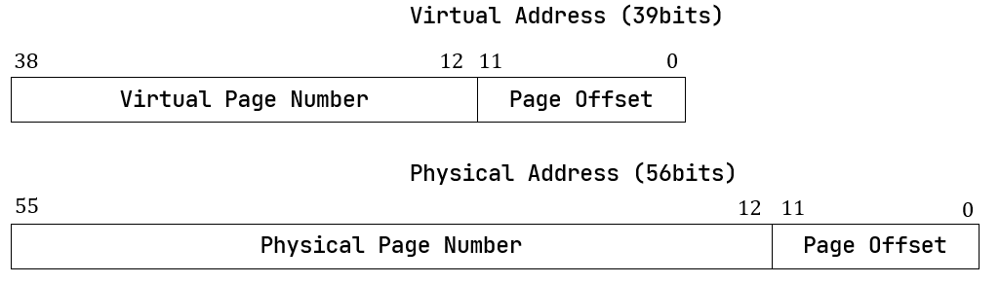

实现 SV39 多级页表机制（上）¶
我们将在内核实现 RV64 架构 SV39 分页机制。由于内容过多，分成两个小节。
虚拟地址和物理地址¶
内存控制相关的CSR寄存器¶
默认情况下 MMU 未被使能，此时无论 CPU 处于哪个特权级，访存的地址都将直接被视作物理地址。
可以通过修改 S 特权级的 satp CSR 来启用分页模式，此后 S 和 U 特权级的访存地址会被视为虚拟地址，经过 MMU 的地址转换获得对应物理地址，再通过它来访问物理内存。
上图是 RV64 架构下 satp 的字段分布。当 MODE 设置为 0 的时候，所有访存都被视为物理地址；而设置为 8
时，SV39 分页机制被启用，所有 S/U 特权级的访存被视为一个 39 位的虚拟地址，MMU 会将其转换成 56 位的物理地址；如果转换失败，则会触发异常。
地址格式与组成¶
我们采用分页管理，单个页面的大小设置为 \(4\text{KiB}\) ，每个虚拟页面和物理页帧都按 4 KB 对齐。 \(4\text{KiB}\) 需要用 12 位字节地址来表示，因此虚拟地址和物理地址都被分成两部分： 它们的低 12 位被称为 页内偏移 (Page Offset) 。虚拟地址的高 27 位，即 \([38:12]\) 为它的虚拟页号 VPN； 物理地址的高 44 位，即 \([55:12]\) 为它的物理页号 PPN。页号可以用来定位一个虚拟/物理地址属于哪一个虚拟页面/物理页帧。
地址转换是以页为单位进行的，转换前后地址页内偏移部分不变。MMU 只是从虚拟地址中取出 27 位虚拟页号， 在页表中查到其对应的物理页号，如果找到，就将得到的 44 位的物理页号与 12 位页内偏移拼接到一起，形成 56 位物理地址。
注解
RV64 架构中虚拟地址为何只有 39 位？
虚拟地址长度确实应该和位宽一致为 64 位，但是在启用 SV39 分页模式下，只有低 39 位是真正有意义的。 SV39 分页模式规定 64 位虚拟地址的 \([63:39]\) 这 25 位必须和第 38 位相同，否则 MMU 会直接认定它是一个 不合法的虚拟地址。。
也就是说，所有 \(2^{64}\) 个虚拟地址中，只有最低的 \(256\text{GiB}\) （当第 38 位为 0 时） 以及最高的 \(256\text{GiB}\) （当第 38 位为 1 时）是可能通过 MMU 检查的。
地址相关的数据结构抽象与类型定义¶
实现页表之前，先将地址和页号的概念抽象为 Rust 中的类型。
首先是这些类型的定义：
// os/src/mm/address.rs
#[derive(Copy, Clone, Ord, PartialOrd, Eq, PartialEq)]
pub struct PhysAddr(pub usize);
#[derive(Copy, Clone, Ord, PartialOrd, Eq, PartialEq)]
pub struct VirtAddr(pub usize);
#[derive(Copy, Clone, Ord, PartialOrd, Eq, PartialEq)]
pub struct PhysPageNum(pub usize);
#[derive(Copy, Clone, Ord, PartialOrd, Eq, PartialEq)]
pub struct VirtPageNum(pub usize);
上面分别给出了物理地址、虚拟地址、物理页号、虚拟页号的 Rust 类型声明，它们都是 usize 的一种简单包装。 将它们各自抽象出来而不是直接使用 usize，是为了在 Rust 编译器的帮助下进行多种方便且安全的 类型转换 (Type Convertion) 。
这些类型本身可以和 usize 之间互相转换，地址和页号之间也可以相互转换。以物理地址和物理页号之间的转换为例：
1// os/src/mm/address.rs
2
3impl PhysAddr {
4 pub fn page_offset(&self) -> usize { self.0 & (PAGE_SIZE - 1) }
5}
6
7impl From<PhysAddr> for PhysPageNum {
8 fn from(v: PhysAddr) -> Self {
9 assert_eq!(v.page_offset(), 0);
10 v.floor()
11 }
12}
13
14impl From<PhysPageNum> for PhysAddr {
15 fn from(v: PhysPageNum) -> Self { Self(v.0 << PAGE_SIZE_BITS) }
16}
其中 PAGE_SIZE 为 \(4096\) ， PAGE_SIZE_BITS 为 \(12\) ，它们均定义在 config 子模块
中，分别表示每个页面的大小和页内偏移的位宽。从物理页号到物理地址的转换只需左移 \(12\) 位即可，但是物理地址需要
保证它与页面大小对齐才能通过右移转换为物理页号。
对于不对齐的情况，物理地址不能通过 From/Into 转换为物理页号，而是需要通过它自己的 floor 或 ceil 方法来
进行下取整或上取整的转换。
// os/src/mm/address.rs
impl PhysAddr {
pub fn floor(&self) -> PhysPageNum { PhysPageNum(self.0 / PAGE_SIZE) }
pub fn ceil(&self) -> PhysPageNum { PhysPageNum((self.0 + PAGE_SIZE - 1) / PAGE_SIZE) }
}
页表项的数据结构抽象与类型定义¶

上图为 SV39 分页模式下的页表项，其中 \([53:10]\) 这 \(44\) 位是物理页号，最低的 \(8\) 位 \([7:0]\) 则是标志位，它们的含义如下：
仅当 V(Valid) 位为 1 时，页表项才是合法的；
R/W/X 分别控制索引到这个页表项的对应虚拟页面是否允许读/写/取指；
U 控制索引到这个页表项的对应虚拟页面是否在 CPU 处于 U 特权级的情况下是否被允许访问；
G 我们不理会；
A(Accessed) 记录自从页表项上的这一位被清零之后，页表项的对应虚拟页面是否被访问过；
D(Dirty) 则记录自从页表项上的这一位被清零之后，页表项的对应虚拟页表是否被修改过。
先来实现页表项中的标志位 PTEFlags ：
// os/src/main.rs
#[macro_use]
extern crate bitflags;
// os/src/mm/page_table.rs
use bitflags::*;
bitflags! {
pub struct PTEFlags: u8 {
const V = 1 << 0;
const R = 1 << 1;
const W = 1 << 2;
const X = 1 << 3;
const U = 1 << 4;
const G = 1 << 5;
const A = 1 << 6;
const D = 1 << 7;
}
}
bitflags 是一个 Rust 中常用来比特标志位的 crate 。它提供了
一个 bitflags! 宏，如上面的代码段所展示的那样，可以将一个 u8 封装成一个标志位的集合类型，支持一些常见的集合
运算。
接下来我们实现页表项 PageTableEntry ：
1// os/src/mm/page_table.rs
2
3#[derive(Copy, Clone)]
4#[repr(C)]
5pub struct PageTableEntry {
6 pub bits: usize,
7}
8
9impl PageTableEntry {
10 pub fn new(ppn: PhysPageNum, flags: PTEFlags) -> Self {
11 PageTableEntry {
12 bits: ppn.0 << 10 | flags.bits as usize,
13 }
14 }
15 pub fn empty() -> Self {
16 PageTableEntry {
17 bits: 0,
18 }
19 }
20 pub fn ppn(&self) -> PhysPageNum {
21 (self.bits >> 10 & ((1usize << 44) - 1)).into()
22 }
23 pub fn flags(&self) -> PTEFlags {
24 PTEFlags::from_bits(self.bits as u8).unwrap()
25 }
26}
第 3 行我们让编译器自动为
PageTableEntry实现Copy/CloneTrait，来让这个类型以值语义赋值/传参的时候 不会发生所有权转移，而是拷贝一份新的副本。第 10 行使得我们可以从一个物理页号
PhysPageNum和一个页表项标志位PTEFlags生成一个页表项PageTableEntry实例；而第 20 行和第 23 行则分别可以从一个页表项将它们两个取出。第 15 行中，我们也可以通过
empty方法生成一个全零的页表项，注意这隐含着该页表项的 V 标志位为 0 ， 因此它是不合法的。
后面我们还为 PageTableEntry 实现了一些辅助函数(Helper Function)，可以快速判断一个页表项的 V/R/W/X 标志位是否为 1，以 V
标志位的判断为例：
// os/src/mm/page_table.rs
impl PageTableEntry {
pub fn is_valid(&self) -> bool {
(self.flags() & PTEFlags::V) != PTEFlags::empty()
}
}
这里相当于判断两个集合的交集是否为空。